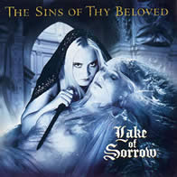
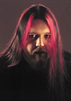
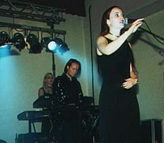

Entrevista
de Glenn Morten - Dezembro de 1999
Comecemos
tradicionalmente com você nos falando sobre a história
de The Sins Of Thy Beloved.
Bem, The Sins Of Thy Beloved foi formado
por mim, Arild e Stig em novembro de 96. Anita e Ola e uma tecladista
também uniram-se então. E por volta de janeiro
e fevereiro de 97, nós gravamos um MCD demonstrativo,
All Alone, e em seguida conseguimos nosso primeiro
contrato de gravação. Depois esta tecladista deixou
a banda e Ingfrid assumiu. Nós também pedimos
para Anders que nos acompanhasse em algumas apresentações
ao vivo durante este verão, e em seguida ele também
uniu-se à banda. No fim deste ano, terminamos o contrato
com nossa gravadora e em janeiro de 98 gravamos uma demo chamada
Silent Pain. Nessa época nós entramos
em contato com Pete (Johansen) e ele tocou violinos para nós,
nessa demo. Enviamos a demo para várias gravadoras e
acabamos assinando com a Napalm Records. E gravamos o álbum
Lake Of Sorrow. Eu não me recordo exatamente
quando nós gravamos este álbum... Mas quem se
preocupa... Pete também uniu-se à banda como um
membro regular, durante este período. E depois nós
saímos em uma turnê européia, e tocamos
em alguns festivais e agora, nós completamos a gravação
de nosso novo álbum, Perpetual Desolation, que
será lançado no começo do próximo
milênio.
Nos
fale sobre seu mais recente lançamento, Lake Of Sorrow,
e suas idéias neste trabalho?
Eu fiquei muito orgulhoso deste álbum
e acho que é um bom álbum de estréia. É
bastante atmosférico e é possível perceber
bem isso, escutando-o. Mas como eu disse, era um álbum
de estréia e há muitas coisas que poderíamos
ter feito melhor se tivéssemos esperado mais algum tempo,
antes de gravarmos. Mas o que está feito está
feito!
Sobre o material
que está trabalhando atualmente, como você diria
que difere do anterior?
O novo álbum é mais rápido,
é inspirado mais no black metal, porém mais leve
às vezes. Tem grandes contrastes, os arranjos são
bem melhores, e a produção então, é
muito melhor que a do Lake Of Sorrow.
Tendo sete
membros na banda, é difícil conciliar horários
para todos trabalharem? Há muitos conflitos com tantas
personalidades envolvidas? Ou algumas pessoas decidem a direção
padrão da banda?
Atualmente somos 8 integrantes, Pete uniu-se
à banda depois que tiramos as fotografias para o CD.
E não tivemos tempo para fazer fotos novas.
Pode ser difícil organizar tudo
já que quase todos têm trabalhos e/ou estudos.
Mas não causa nenhum problema. Nós sempre organizamos
algo.
Ainda não tivemos nenhum conflito
grande... e eu não penso que tenhamos, já que
todos nós, nos dedicamos ao que fazemos. Quem decide
qual rumo tomar é, principalmente, Arild e eu, já
que escrevemos a maioria do material. Mas quando há algo
que os outros não gostam, sempre achamos uma solução.
Há
muitas semelhanças com sua banda e o antigo Theatre
Of Tragedy, eu imagino que a ouça muito? Essa
banda teve alguma influência sobre você?
Pessoalmente, não penso que somos
parecidos com o ToT. E sim, nós ouvimos muito ToT! Eu
não diria que a banda nos influenciou, mas também
não diria que não.
Que
sentimentos você tenta transmitir ao ouvinte, através
de sua música?
Nós escrevemos músicas que
gostamos, e nunca pensei em que sentimentos que o ouvinte pode
ter através de nossa música.
Você
planeja escrever alguma canção em seu norueguês
nativo? Há uma razão para ter escolhido só
inglês?
Nós não temos nenhum plano
de escrever canções em norueguês, eu não
penso que se encaixaria na música. Nós escrevemos
em inglês porque é um idioma muito mais poético,
e em norueguês soaria pateticamente seco, com títulos
como Helt Alene ou Kysset.
Eu penso
que é importante conhecer as pessoas por detrás
da música... nos fale sobre algumas das coisas em sua
vida que o inspira?
Hmmm, tudo me inspira, eu não posso
dizer mais que isso!
Qual sua
opinião sobre religião?
Eu nem sequer comento sobre religião!
Este tópico é a fonte de toda a porcaria sangrenta
neste planeta!
A música
de TSOTB é muito triste... isto reflete uma perspectiva
pessoal da banda?
Pode ser que sim, às vezes. De qualquer
forma, a escuridão e coisas tristes são extremamente
adoráveis, você não pensa assim?
Você
daria sua vida por alguma coisa, se necessário?
Eu odeio perguntas assim! Eu não
sei o que dizer. Família, amor e alguma porcaria poderiam
ser coisas pelo que eu morreria.
Diga-nos,
o que acha sobre a morte? O que espera dela?
Morte poderia ser uma experiência
"do caramba" ou poderia não ser! Eu apenas
terei que esperar e ver.
Qual sua opinião
sobre o estado caótico do mundo? Você vê
um futuro mais negro para a humanidade? Irá piorar antes
de melhorar?
Nunca será melhor, só irá
piorar até que tudo se dane... então a Escuridão
tomará conta do mundo... e todos nós morreremos!!
A humanidade
sempre buscou respostas aos enigmas do espaço... O que
você acredita existir fora de nosso mundo, na distante
frieza do espaço?
Eu não tenho a mínima idéia.
Um vazio???
Muitas pessoas
atualmente estão retornando às religiões
dos antepassados pagãos... o que você acha sobre
as antigas religiões?
As antigas religiões são
fascinantes e eu adoro ler sobre a antiga mitologia norueguesa.
A egípcia também é interessante.
Voltando
à música... Você tem feito alguma turnê?
Nós estivemos em uma excursão
européia como banda de abertura, junto com Tristania,
Trail Of Tears, Siebenbürgen, e Anticrisis. E só
posso dizer que foi uma experiência "do caramba".
Estava temeroso para tocar fora da Noruega e agora mal posso
esperar pra sair numa turnê novamente.
É um
nome bastante incomum, The Sins Of Thy Beloved. Você
poderia nos falar por que foi escolhido e o que significa?
No princípio nós nos chamávamos
Purgatory, mas muitas bandas já usavam esse
nome. Assim nós tivemos que inventar algo novo. E depois
de horas juntando idéias, Arild e eu decidimos por The
Sins Of Thy Beloved. Este era um nome que pensamos que
poderia descrever nossa música. E queríamos também
ter um nome único, que ninguém mais tivesse.
Há
algum projeto especial para o futuro, que você esteja
trabalhando?
Eu tenho algumas idéias para projetos
que eu gostaria de fazer, mas não acho que poderei fazê-los
nos próximos anos; há bastante trabalho com o
TSOTB. Ainda temos três álbuns para fazer. Assim
eu terei que esperar e ver...
Para concluirmos,
seus comentários finais.
Hmmm, eu espero
que todos vocês que nos acompanham a algum tempo, confiram
nosso futuro álbum Perpetual Desolation. E para quem
ainda não conhece, ouça o Lake of Sorrow, que
já foi lançado lá fora! E gostaria de desejar
à todos um feliz Natal profano e um sangrento ano/milênio
novo!
Extraída
de www.mourningtheancient.com/sins.htm
Traduzida
e adaptada por Spectrum